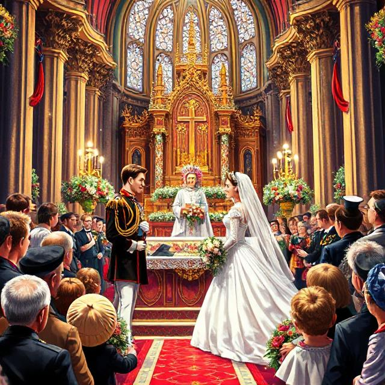

1300-1399
Svartedauden (1349)

Endringer i den politiske maktbalansen
Pestens følgevirkninger svekket adel og kirke.
Kristendommens etablering og kirkebygging
Kirkelig struktur ble konsolidert og mange katedraler bygget.
Handel og kulturkontakt
Handel med Europa fortsatte til tross for befolkningsnedgang.
Begynnelsen av dansk innflytelse
Danske adelige og embetsmenn fikk økt innflytelse over Norge.
1400-1499
Kalmarunionens etablering (1397)
Norge ble med i Kalmarunionen med Danmark og Sverige.
Konsolidering av unionen
Norske institusjoner ble integrert i unionens system.
Handelsvekst i Bergen
Bergen vokste frem som et viktig handelsknutepunkt.
Utvikling av norsk lov og administrasjon
Rettssystemet ble tilpasset unionens behov.
Kulturell påvirkning fra Europa
Renessanseideer begynte å sive inn.
1500-1599
Reformasjonen i Norge (1537)
Overgang til protestantisme forandret kirkestrukturen.
Reduksjon av kirkens eiendommer
Staten tok over mange av kirkens eiendommer.
Etablering av et dansk styrt system
Norge ble en del av en sentralisert dansk stat.
Økonomisk omstilling
Nye strukturer i handel og næringsliv endret økonomien.
Kulturell tilpasning
Endringer i kunst og litteratur med overgang til protestantisme.
1600-1699
Fortsatt dansk styre
Norge forble under dansk styre med tett kulturell integrasjon.
Utvikling av det norske bondesamfunnet
Tradisjonelt landbruk og lokale tradisjoner fikk økt betydning.
Handel og sjøfart
Havnene, særlig Bergen, styrket Norges økonomi.
Byvekst og urbanisering
Vekst i byer som Oslo og Bergen med nye offentlige bygg.
Kulturell utvikling
Norske folke- og kunsttradisjoner utviklet seg videre.
1700-1799
Opplysningstiden og reformer
Reformer fra opplysningstiden påvirket hele riket.
Økt nasjonal bevissthet
Fremveksten av nasjonal identitet tross dansk styre.
Handels- og fiskerivekst
Norge ble en viktig leverandør av sjømat og handelsvarer.
Kulturell blomstring
Litteratur og kunst formet en egen norsk identitet.
Politiske spenninger
Misnøye med dansk styre la grunnlaget for nasjonal frigjøring.
1800-1899
Grunnloven på Eidsvoll (1814)
Grunnloven markerer starten på Norges kamp for selvstendighet.
Union med Sverige (1814–1905)
Norge var i union med Sverige, preget av nasjonal oppvåkning.
Unionsoppløsningen (1905)
Oppløsningen av unionen med Sverige ga Norge full uavhengighet.
Språkstriden – Riksmål vs. Landsmål
Debatten om skriftspråk formet den nasjonale identiteten.
Modernisering og industrialisering
Urbanisering og nye næringer la grunnlaget for det moderne Norge.
1900-1999
Kvinners stemmerett (1913)
Innføringen av stemmerett for kvinner var et viktig steg mot likestilling.
Motstand under andre verdenskrig (1940–1945)
Motstandsbevegelsen spilte en avgjørende rolle under okkupasjonen.
Bygging av velferdsstaten
Etter krigen ble grunnlaget for en sosialdemokratisk velferdsstat lagt.
Modernisering av monarkiet
Kong Harald Vs og Dronning Sonja moderniserte monarkiet, blant annet gjennom bryllupet i 1968.
Økonomisk transformasjon
Oljeoppdagelsen og oljeøkonomien endret Norges økonomi fundamentalt.
2000-2020
Prinsesse Mette-Marit og Kronprins Haakons bryllup (2001)
Terrorangrepet 22. juli (2011)
Et tragisk angrep som rystet nasjonen og førte til omfattende debatter.
Koronapandemien (2020–2022)
Digitalisering og teknologisk innovasjon
Satsing på digital infrastruktur har preget Norge i det 21. århundre.
Fokus på klima og bærekraft
Norge engasjerer seg i internasjonale klimaavtaler og fornybar energi.